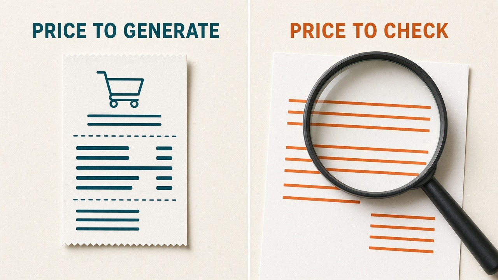

Two prices for one AI answer

Post
The Guardian, Oct 13: employers face "a flood of errors and low-quality work that are sapping employee time, raising privacy and security risks and pushing up costs." Two prices get mixed up: the answer, and checking it. Which is bigger where you work?
Sources
The "two prices" framing is opinion. Made to go with a post by @iggym.